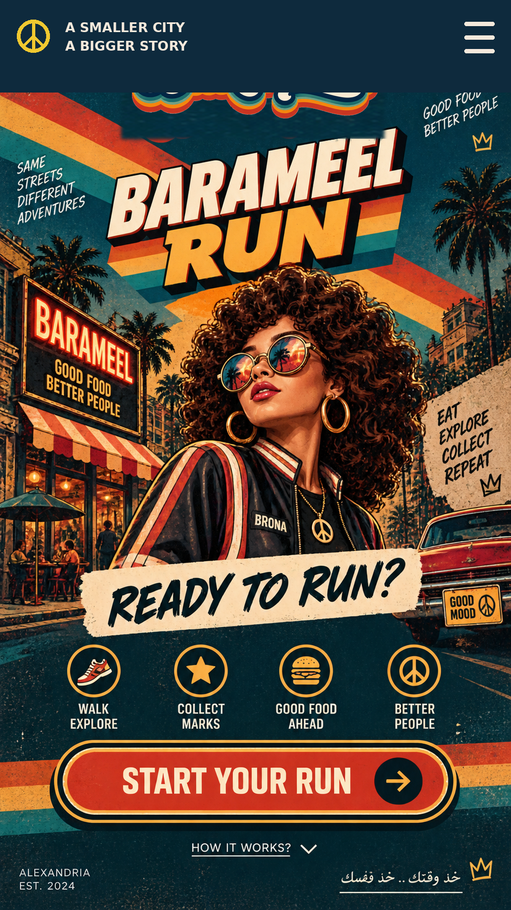

RUN READY — LET'S GO
How it works
01 — WALK & EXPLORE
Move through the BARAMEEL RUN world.
02 — COLLECT MARKS
Collect marks as you complete the run.
03 — GOOD FOOD AHEAD
Use your marks in the BARAMEEL reward journey.

01 — WALK & EXPLORE
Move through the BARAMEEL RUN world.
02 — COLLECT MARKS
Collect marks as you complete the run.
03 — GOOD FOOD AHEAD
Use your marks in the BARAMEEL reward journey.